|
TERRARIOS PARA EJEMPLARES DE PEQUE�O TAMA�O
Fernando P�rez, 2008
La necesidad de tener recintos peque�os en casa para que las cr�as
que van naciendo est�n como se merecen, me ha hecho plantearme el
construir este tipo de alojamientos. A continuaci�n muestro como los
he realizado.
Con dos terrarios para probar el sistema y ver si su funcionamiento
era el esperado, la verdad que iba sobrado. Dos �ntimos amigos, de
tanto venir a casa a saquear la bodega y ver las estrellitas
pululando por los terrarios, decidieron que era hora de decidirse a
su mantenimiento. Pues nada, que el Fernando les prepare dos
terrarios m�s, acondicionados a ser posible, con dos bolitas de ping
pong estrelladas dentro, que les har� recordar aquellos tiempos
a�orados cuando destacaban tras una tabla de tenis de mesa. As� son
estos jo�os deportistas retirados, jeje. Si lo le�is, no os lo
tom�is a mal, �eh, Zemarys!�
Tras buscar en distintos almacenes de madera e investigando qu� se
pod�a ce�ir al proyecto, encontr�, en el Aki de la costa granadina,
una oferta de tableros de pino encolado que resultaba sugerente. Con
unas medidas de 180x45 y un grosor de 16mm, ser�a id�neo para poder
realizar los alojamientos de tama�o medio. Nos aprovechamos de que
el corte te lo realizan gratis y as� s�lo hay que montar cada
estructura seg�n las medidas necesarias. Con tres tableros de la
oferta se pod�an montar dos terrarios, as� que a cargar madera al
coche.
En este caso concreto, he conseguido realizar terrarios de 83cm de
largo por 45 de alto y 45 de fondo. Con este tama�o podr� mantener
sin ning�n problema a las cr�as que van naciendo en casa durante su
primer a�o de vida. Por otro lado, mis amiguetes podr�n sacarle
provecho al alojamiento unos tres a�os, ya que Geochelone elegans
necesita terrarios m�s espaciosos de tama�o subadulto/adulto.
Pues m�s o menos la introducci�n al proyecto bricolero est�
presentada. Empezamos a mostrar im�genes y comentar la construcci�n
paso a paso.
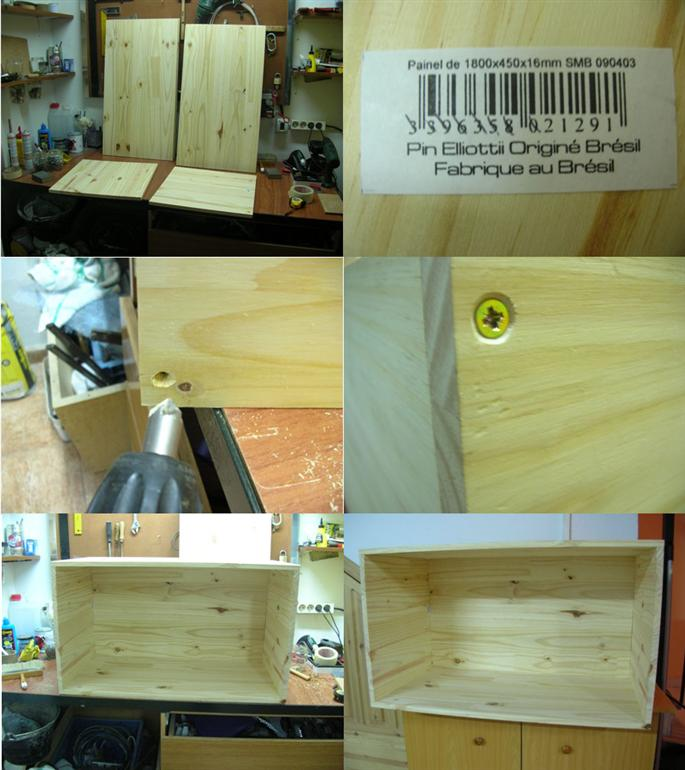
Montaje 1
1. Las medidas de las piezas para cada terrario son muy f�ciles.
Necesitamos el suelo, que ser� de 80x45cm. Para los laterales, dos
piezas de 45x45cm. Otra de 83.2x45cm para el fondo y, la �ltima, de
igual medida, 83.2x45cm, para el techo. La realizaci�n de la
estructura ser� a modo de caj�n, as� que el lado sin madera ser� el
frontal del terrario, en esa parte se instalar�n dos listones en la
zona superior e inferior del caj�n para darle fuerza y de los que
hablaremos m�s adelante.
Pues nada, a encolar los tableros y a irlos uniendo. Adem�s de
ponerle cola blanca en los cantos, se acaban de acoplar con
tornillos de contrachapado de 45mm. Antes de introducir el tornillo,
se realiza el agujerito con una broca de madera bien chiquitina; de
esta manera el tornillo entrar� mejor y no agrietaremos los paneles.
Tambi�n con una broca de avellanar ahondamos cada orificio para que
el tornillo una vez introducido no sobresalga de la madera.
Ya tenemos el cascar�n de madera realizado, podemos empezar a ir
d�ndole forma.
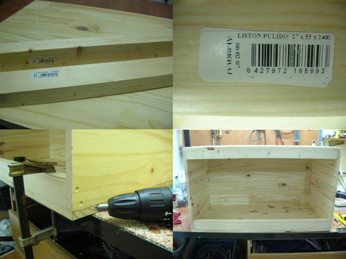
Montaje 2
2. Utilizar� dos listones de 27mm de grosor x 55mm de ancho. El
largo ser� el suficiente para acoplar cada list�n a la parte
superior e inferior de la estructura. Con estos listones se refuerza
enormemente el cascar�n de madera y nos vendr�n fenomenal para
instalar las gu�as para cristales. Tambi�n nos servir�n para
esconder iluminaci�n (el superior) y para montar la parte baja
estanca con azulejos del alojamiento (el inferior).
En el montaje vemos el detalle de colocaci�n de los listones, una
vez medida la distancia interna del caj�n, encolados y luego con dos
tornillos de 50mm en los laterales y cuatro o cinco del mismo tama�o
en la zona alta o baja del caj�n (dependiendo donde se ubique)
quedar� totalmente fijado y la fuerza de la estructura debidamente
reforzada.
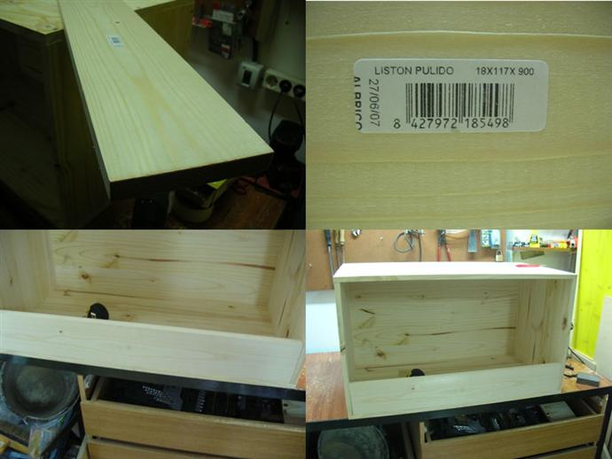
Montaje 2A
2A. Una variante de colocaci�n de los listones en los terrarios
dise�ados para los alojamientos de mis amigos. En este caso, el
list�n inferior ser� distinto al que instalar� en los m�os; la
diferencia ser� que estos recintos tendr�n un list�n mucho m�s alto
en su zona inferior. De esta manera, la cubeta que realicemos para
el substrato ser� m�s alta y garantizar� en un futuro que los
animales con m�s de dos a�os no puedan abrir los cristales. Estos
terrarios est�n pensados para albergar ejemplares de mayor tama�o en
a�os venideros, los m�os exclusivamente para ejemplares peque�itos.
El list�n que utilizaremos para la zona inferior ser� de 18mm de
grosor (el tama�o justo para las gu�as de los cristales) x 90mm de
altura. Con esto se garantiza cinco o seis cm de substrato en el
alojamiento (ya se sabe de su importancia) y a�n quedan algunos m�s
de altura hasta los cristales para as� los animales no tengan f�cil
acceso.
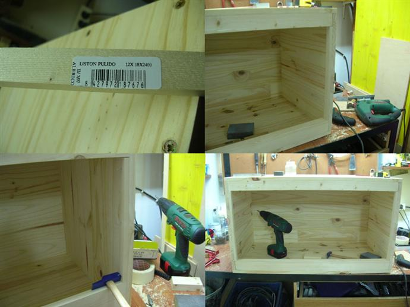
Montaje 3
3. Para darle un poquito m�s de fuerza a los laterales del caj�n y
tener profundidad para luego jugar con el fondo que se utilizar� en
la decoraci�n, se instalan unos listones peque�os clavados con
puntillas. Son listones de 18mm de ancho x 12mm de altura, la
largura ser� la existente entre los listones verticales.
Nos vendr� muy bien a la hora de realizar la instalaci�n de piedra y
mortero que veremos m�s adelante. Tambi�n, cuando est� finalizado el
alojamiento, al cerrarlo con los cristales tendremos la sensaci�n de
que el cierre es m�s fuerte.
Ya tenemos el cascar�n de madera totalmente listo. Ahora empezaremos
con la tarea de decorar su interior para su posterior lijado y
pintado. Vamos al tema.
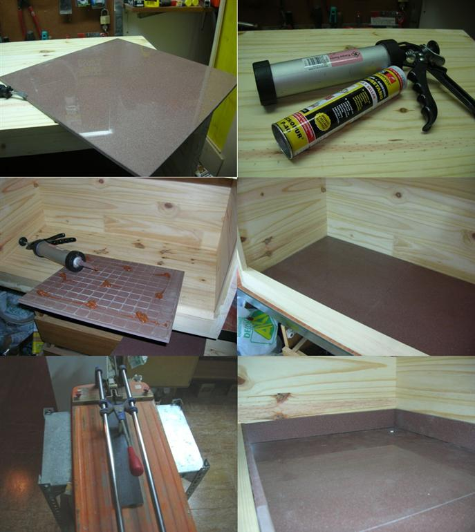
Montaje 4
4. Empezamos con la estanqueidad en la zona baja del terrario. La
duraci�n de un alojamiento peque�o siempre ir� en funci�n de la base
donde se instala el substrato. Con un caj�n estanco, como si fuera
un terrario o pecera de cristal, garantizamos que la humedad nunca
llegar� a la madera, de esta manera su durabilidad ser� evidente.
En este caso concreto, para as� reciclar materiales que ten�a por
casa y la del vecino, utilizo azulejos para sellar la parte baja.
Para unir los azulejos utilizar� masilla de poliuretano, el mejor
invento despu�s de la cama. Con una m�quina de cortar azulejos
preparo las piezas para el fondo y los rodapi�s, que ser�n pegados
con la masilla. Tambi�n me aseguro de que las uniones queden
selladas, para as� evitar fugas o humedad en el futuro.
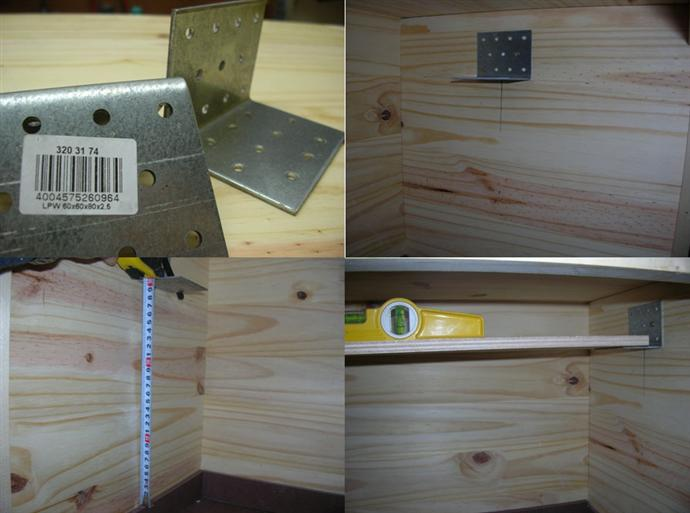
Montaje 5
5. Antes de liarme con el fondo, instalo unas escuadras donde se
dispondr� el tubo fluorescente. En alojamientos tan peque�os es la
mejor soluci�n como luminaria de espectro total, mejor que l�mparas
de bajo consumo o similares que s�lo iluminan una zona del recinto.
Al menos con ejemplares peque�os el resultado es excelente.
La altura del tubo es fundamental. En este caso concreto hay una
distancia de 30cm desde la ubicaci�n del plaf�n hasta el mismo suelo
del alojamiento. Cuando se instale el substrato la altura estar�
entorno a los 25/27cm.
Im�genes de las escuadras, en este caso de 60x60mm, la ubicaci�n y
comprobaci�n en el interior del futuro terrario.
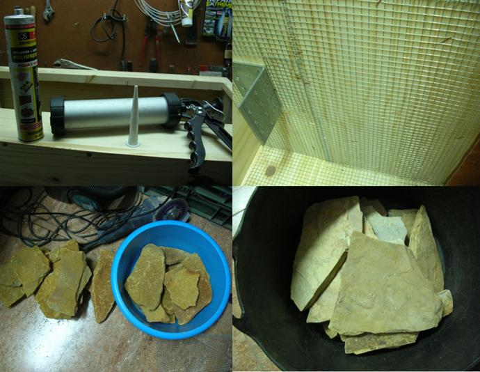
Montaje 6
6. Empezamos con la instalaci�n del fondo. Utilizaremos, de nuevo,
masilla de poliuretano (hay numerosas marcas en el mercado) y
rejilla met�lica para unir, mediante grapas, a la parte interna del
alojamiento. Con la rejilla met�lica garantizamos una mejor uni�n de
piedras y mortero en los siguientes pasos.
La piedra que utilizar� para los alojamientos de mis amigos ser�
piedra de Cuenca (izquierda) y las que ir�n instaladas en los m�os
ser� piedra f�sil (derecha).
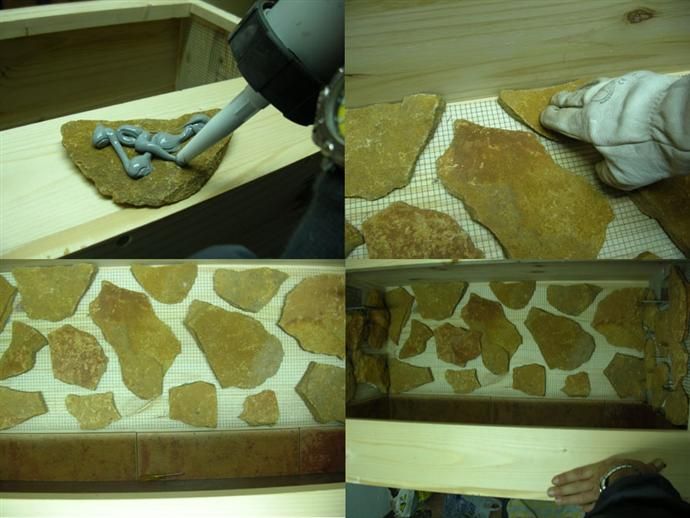
Montaje 7
7. Una vez puesta la malla met�lica en la parte interior del
terrario, empezamos a pegar las lascas de piedra con la masilla de
poliuretano. Poco a poco vamos instalando piedras, cuando la masilla
seque (totalmente a las 24horas), os aseguro que no podr�is
arrancarlas de donde hayan sido ancladas.
Im�genes de la disposici�n de las piedras a �gusto del artista�
siempre dejando un hueco entre ellas donde se fijar� el mortero.
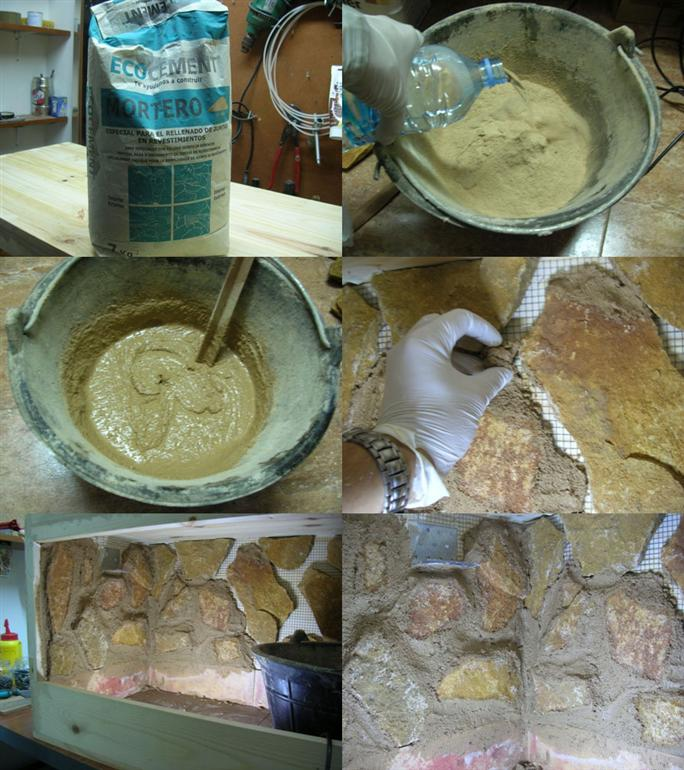
Montaje 8
8. Una vez que todas las piedras est�n bien pegadas, es hora de ir
rellenando los huecos con el mortero. Utilizar� mortero impermeable
que, aunque no es estanco, soporta bien el agua de lluvia ya que se
utiliza en exteriores y es hidr�fugo.
Para que el mortero quede maleable, si alguna vez os decid�s a
utilizarlo, os aconsejo que no lo dej�is muy l�quido. De esta manera
lo podr�is coger con la mano, como si se tratara de barro, e irlo
metiendo entre las juntas que hay que rellenar. Poco a poco y con
paciencia, se van rellenando todos los huecos. Es un trabajo nada
costoso y en el que podemos dar m�s o menos profundidad a los
relieves que van uniendo las piedras.
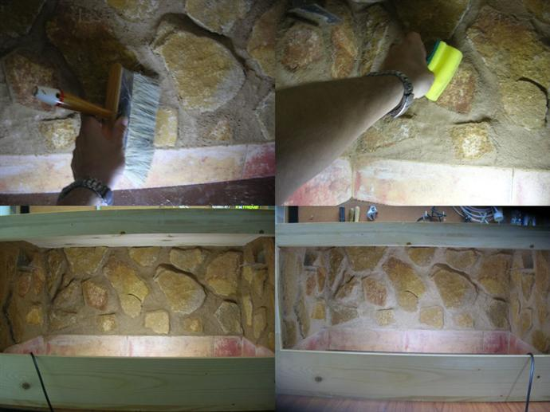
Montaje 9
9. Una vez que todas las juntas est�n bien selladas y antes de que
el mortero seque del todo, con un pincel se quita brillo al mortero
para que su aspecto sea m�s natural. Con una esponja h�meda se
quitan los restos de la mezcla de los bordes de las piedras.
En las im�genes inferiores observamos el mortero ya repasado pero
a�n sin secar (izquierda) y ya seco con el color final que queda
(derecha). Este terrario, con list�n alto en la parte baja,
corresponde al de uno de mis amigos.
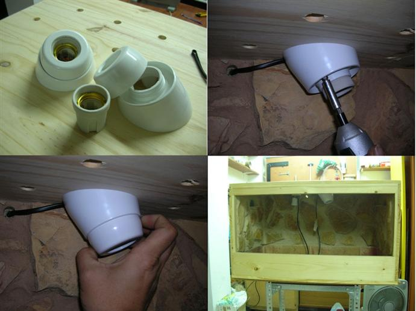
Montaje 10
10. Adem�s del fluorescente, necesitamos instalar un foco de
soleamiento en el alojamiento. En este concretamente, utilizaremos
unos portal�mparas que encontr� en una gran superficie. Son
portal�mparas que vienen con una carcasa que los inclina, es de
cer�mica y soporta bien l�mparas de 60W, as� que para este tipo de
recintos es genial. Os dir� que me cost� unos 3� (hay marcas
especialistas en reptiles que las venden igual a 12�).
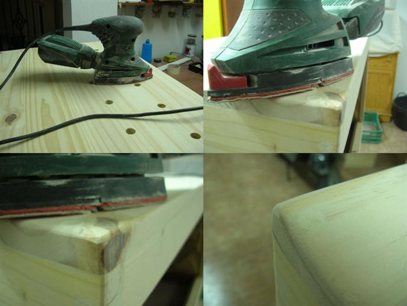
Montaje 11
11. Mascarillas para al�rgicos y una buena lijadora. Es hora de
darle a la capa externa del terrario para que quede bien finita y en
estado �ptimo para ser pintada.
En la primera imagen de la izquierda, se puede observar que he
realizado agujeros en el techo del terrario. De esta manera la
ventilaci�n en el mismo ser� mucho mejor. Con la lijadora repasamos
todas las esquinas, escaloncitos, agujeros de tornillo (que han sido
tapados con masilla de pino) y cualquier fisura para que quede todo
bien parejo.
Las esquinas y los bordes son repasados, tambi�n, para quitarles las
esquinas y que tengan aspecto redondeado. La �ltima imagen del
montaje, nos muestra el acabado redondo de la esquina ya tapado por
la masilla.
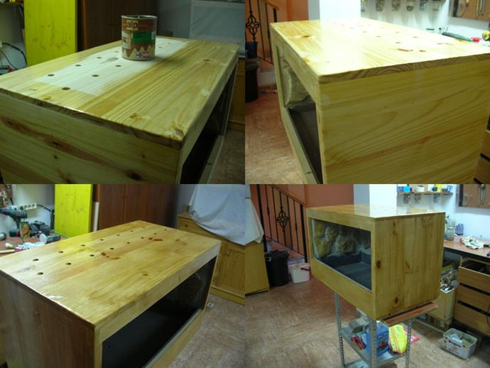
Montaje 12
12. Empezamos con la pintura. En este caso, utilizar� barniz
transparente de poliuretano. Una primera capa, luego un lijado fino
y una �ltima capa, dar�n el aspecto a pino natural que se observa en
la imagen.
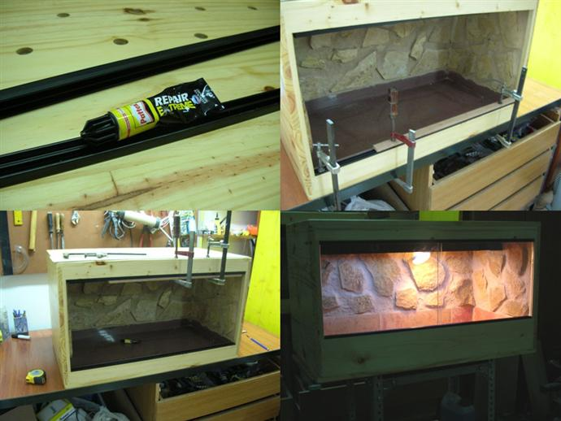
Montaje 13
13. Con pegamento extrafuerte se pegan las gu�as para cristales. En
estos terrarios he utilizado gu�a de 6mm. En ella se pueden poner
sin problemas cristales de 4 � 5mm. Una vez dejados los tiempos de
secado, ya se pueden instalar los cristales.
En la �ltima imagen se puede observar el terrario terminado. En este
caso con bandeja inferior de tama�o alto. El fluorescente y el foco
de soleamiento ya se encuentran acoplados en su interior.
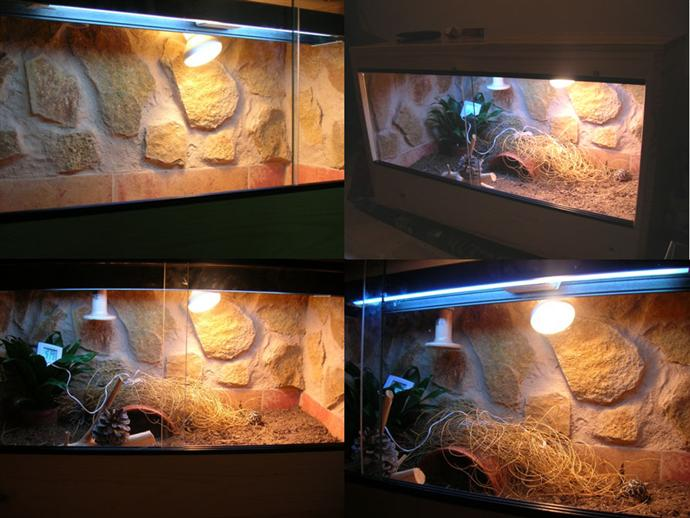
Montaje 14
14. Im�genes del resultado final de uno de los terrarios de mis
amigos. Adem�s de l�mpara de soleamiento, se ha instalado una de
cer�mica para horario nocturno La habitaci�n donde descansar� el
terrario es algo fr�a de noche y es la mejor soluci�n para
garantizar la temperatura necesaria para Geochelone elegans.
El montaje final del alojamiento se logra con gran cantidad de
substrato, un refugio artificial realizado con un tiesto de barro
cortado por la mitad, un par de ramas, una planta de esparto donde
se esconden las cr�as a tomar el sol y una planta Dracaena en la
esquina fr�a del alojamiento que garantiza la humedad en esa zona
del terrario.
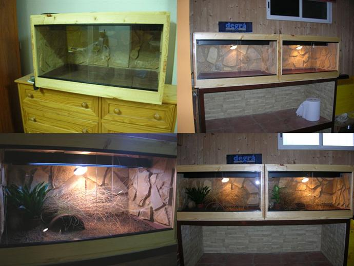
Montaje 15
15. Vista de mis terrarios, con list�n inferior m�s bajo para as�
poder disfrutar de las cr�as en sus primeros meses. No necesitan
l�mpara de cer�mica ya que la habitaci�n mantiene una temperatura
caldeada durante la noche, iluminaci�n con tubo fluorescente de
espectro total y foco spot de 60w.
Las im�genes inferiores corresponden a la instalaci�n del substrato,
refugio y planta natural para la zona h�meda. Los dos terrarios ya
dispuestos en su ubicaci�n final.
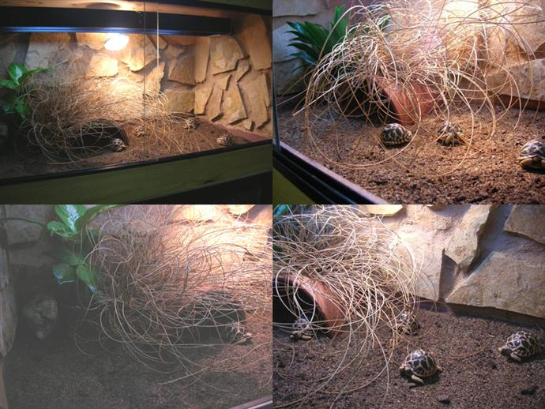
Montaje 16
16. Por fin los animales dentro del alojamiento, inspeccionando
minuciosamente cada palmo del nuevo substrato. El esparto junto al
refugio se encuentran cerca de la zona h�meda para as� que las cr�as
est�n lo m�s hidratadas posible. Ellas podr�n utilizar as� la zona
que se adapte mejor a sus necesidades de termorregulaci�n.
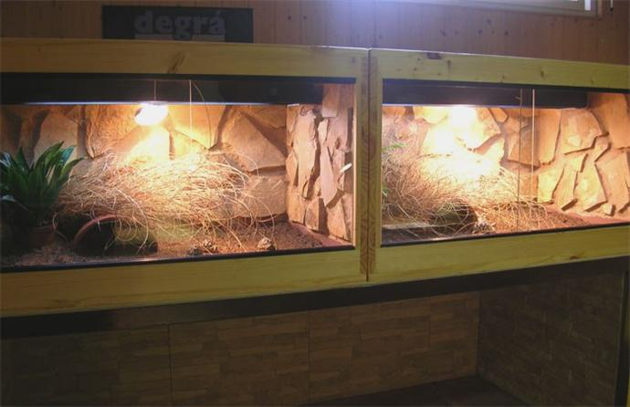
Montaje 17
17. Imagen final de los terrarios. Bajo ellos hay una nueva
estructura de gran tama�o para albergar ejemplares adultos. Dentro
de unas semanas, con un poco de suerte, estar� totalmente acabada.
Espero que la informaci�n os sea �til, tanto para realizar estos
alojamientos, como para que os den ideas a la hora de construir
recintos artificiales peque�os para nuestras tortugas.
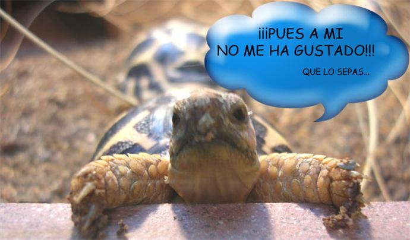
Montaje 18
Sacab�
|